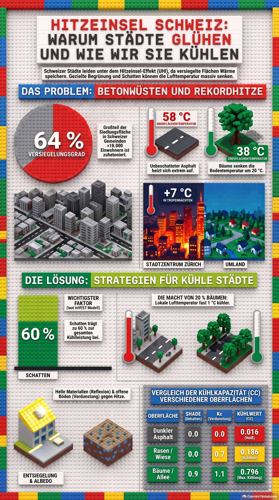

Warum Schweizer Städte glühen – und wie wir sie kühlen können

Zusammenfassung der wichtigsten Kennzahlen zum städtischen Hitzeinsel-Effekt, die auch dem Simulator zugrunde liegen (InVEST Urban Cooling Model, BAFU/ETHZ-Daten).